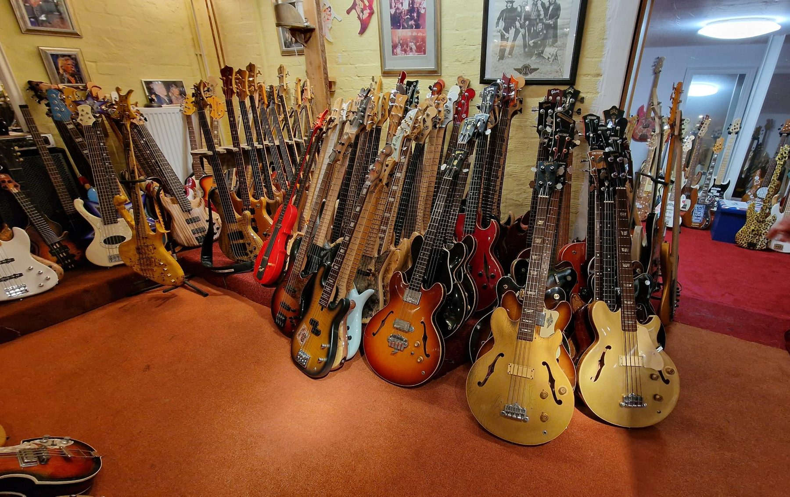
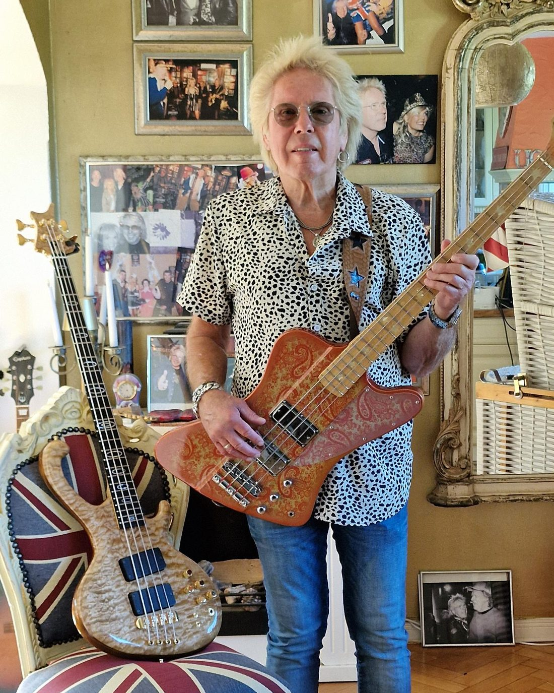
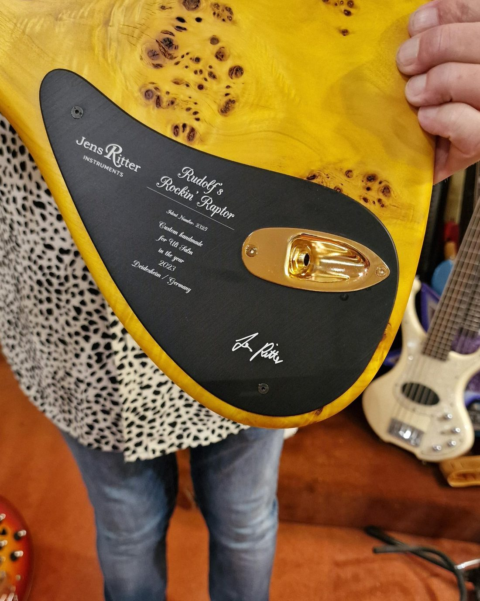
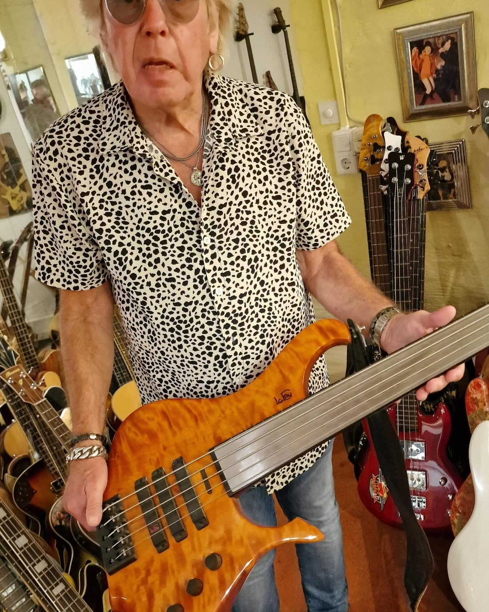
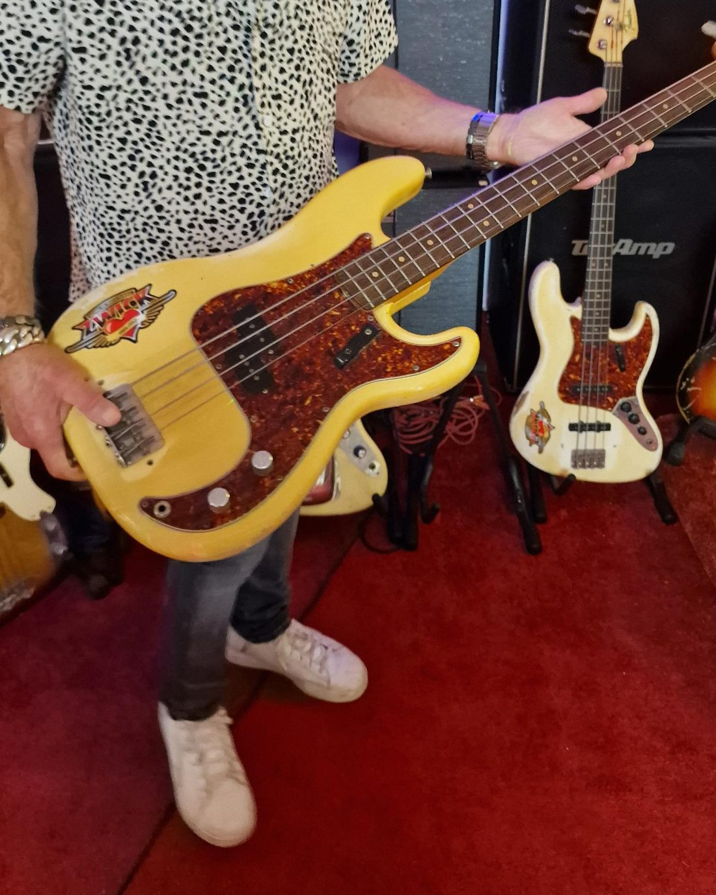
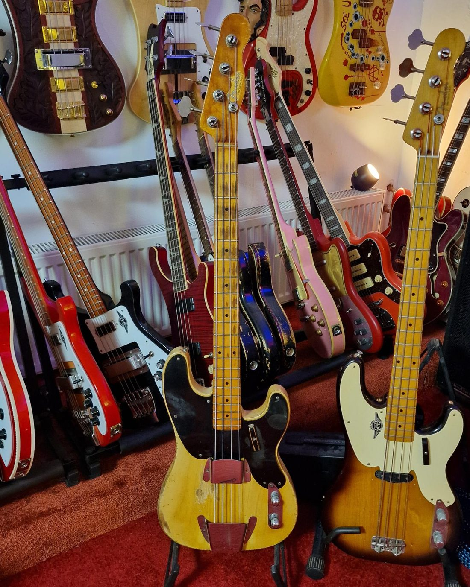

Aus Liebe.
Ein Leben in tausend Bässen
Uli Salm, Nordheide
Uli Salm hält den Weltrekord für die größte Bassgitarren-Sammlung der Erde. Sie hängt nicht auf St. Pauli, sondern bei uns.
Wer den Namen Uli Salm hört, denkt an die Reeperbahn, an sein Zwick, an Jahrzehnte Hamburger Musikgeschichte. Was viele nicht wissen: Sein eigentlicher Schatz steht gar nicht dort, sondern bei uns in der Nordheide. In einem Lagerraum, der zugleich als Proberaum für seine Band dient, hängen Bässe an jeder freien Wand, Instrumente aus fünf Jahrzehnten, jedes mit einer eigenen Geschichte.
Seit dem 10. Februar 2022 ist das amtlich. An diesem Tag zählte das Rekord-Institut für Deutschland hier vor Ort. Seither ist die Sammlung weitergewachsen.
Fünf aus über tausend.





Ein Geschenk fürs Leben
Angefangen hat alles vor rund 50 Jahren mit einem Fender Precision Bass, ein Geschenk seiner Eltern, das er sein Leben lang mit sich getragen hat.